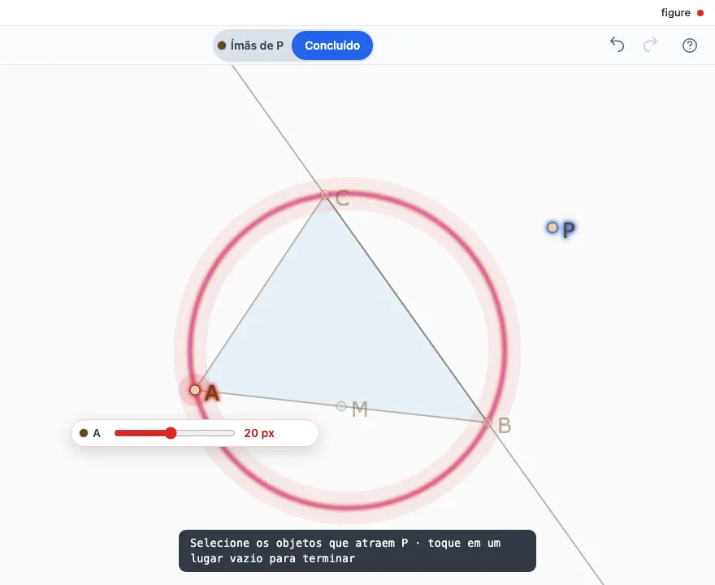

Ímãs, tachinha e mola
Ímãs
Um ponto livre imantado gruda nos objetos escolhidos quando é arrastado perto deles, sem ficar ligado a eles.

- Selecionar o ponto livre e depois Ímãs. O resto da figura fica sob um véu.
- Tocar cada objeto que atrai (ponto, reta, círculo, cônica, curva, lista): ele fica vermelho, com atração inicial de 20 px. O ponto e seus dependentes ficam excluídos.
- Ajustar a atração do ímã escolhido com o controle deslizante do seu cartão: Nenhuma (retira o ímã), de 1 a 1000 px, Em toda parte. A zona de atração de cada ímã é desenhada em vermelho-claro.
- Terminar com um toque num lugar vazio, Concluído ou Esc.
O ponto pode ser arrastado durante o ajuste para testar. Cada ajuste é um passo de desfazer.
Tachinha
Fixar na tela (ponto livre): o ponto mantém seu lugar na janela, e não suas coordenadas, quando se dá zoom, se move a vista ou, em 3D, se gira o sistema de coordenadas. Ele continua deslocável. Segundo toque: retirada. A mesma caixa fica na seção Ponto do painel de propriedades.
Mola
Animar (ponto sobre reta, segmento, semirreta, círculo, arco, polígono, cônica ou lugar, ou controle deslizante) faz sair sob o ponto, ou sob a alça do controle deslizante, uma mola terminada por uma bola.
- Puxar a bola e soltá-la lança o objeto; durante a tração, um fantasma do ponto ou da alça já mostra o movimento.
- Comprimento: velocidade, por níveis exibidos (px/s numa reta, num polígono ou numa cônica; °/s num círculo; % num lugar ou num controle deslizante).
- Lado: sentido; o objeto parte no sentido oposto ao da tração: um controle deslizante puxado para a esquerda (para baixo, se for vertical) aumenta.
- De través em relação a uma reta ou a um controle deslizante (mais de 45°): vaivém. Nos outros casos, o objeto dá voltas.
- Abaixo do primeiro nível: parada.
Num objeto já animado, a mola sai esticada na velocidade atual. Segundo toque em : a mola é guardada. Velocidade exata, sentido inverso, parada na extremidade: seção Animação das propriedades.